The following are the final projects of MSAN 622 Information Visualization for Spring 2015. Enjoy browsing!
The thumbnails give a quick overview of the visualizations used, but the actual project page may appear differently. The projects are ordered by last name. The number and types of techniques and interactivity used are provided for context, and are not directly tied to the final project grade.
| Thumbnail | Project and Author | Types of Techniques | Types of Interactivity |
|---|---|---|---|
| 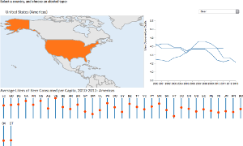 | Alcohol Consumption Worldwide
by Jeff Baker |
2 World Map, Line Chart (Multi-Series), 1D Custom (Small Multiples) | 5 Linked Views, Zoom (On Click), Pan (On Drag), Filter (On Click, Dropdown), Details-on-Demand (On Hover) |
| 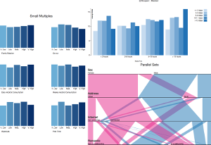 | Portuguese Student Performance
by Rachan Bassi |
2 Bar Chart (Vertical, Grouped/Stacked, Small Multiples), Parallel Sets | 2 Details-on-Demand (On Hover), Reorder (On Drag) |
| 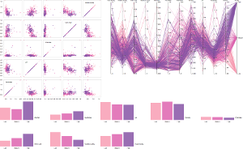 | Red Wine Quality
by Alice Benziger |
3 Scatterplot Matrix, Parallel Coordinates, Bar Chart (Vertical, Small Multiples) | 4 Brush (On Drag), Reorder (On Drag), Details-on-Demand (On Hover), Filter (On Hover) |
| 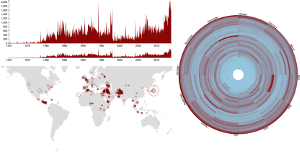 | Monthly Deaths from Terrorism
by Evan Brydon |
3 Area Chart, Symbol Map (Proportional), Heatmap (Circular) | 4 Linked Views, Brush (On Drag), Filter (On Drag), Details-on-Demand (On Hover) |
| 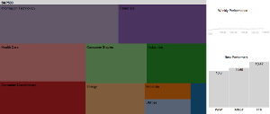 | S&P 500 Market Capitalization
by Florian Burgos |
3 Treemap, Line Chart, Bar Chart (Vertical) | 3 Linked Views, Zoom (On Click), Filter (On Click) |
| 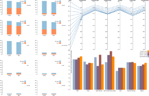 | Substance Abuse and Mental Health
by Steven Chu |
2 Parallel Coordinates, Bar Chart (Vertical, Stacked, Grouped, Small Multiple) | 1 Brush (On Hover) |
| 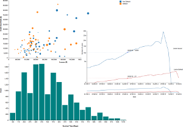 | Lending Club Statistics
by Litong Dong |
3 Bubble Chart, Bar Chart (Vertical), Line Chart (Multi-Series) | 3 Details-on-Demand (On Hover), Reorder (Checkbox), Brush (On Drag) |
| 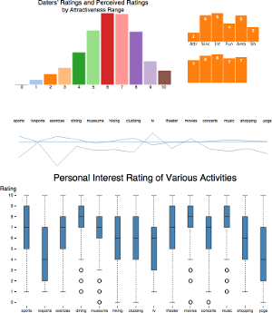 | Speed Dating Dataset
by Lioubov Gloukhova |
3 Bar Chart (Vertical, Small Multiple), Parallel Coordinates, Box Plot | 3 Linked Views, Filter (On Click), Reorder (On Drag) |
| 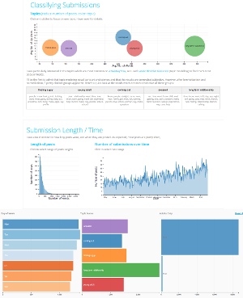 | Exploring /r/AskGayBros
by Brendan Herger |
4 Bubble Chart, Bar Chart (Vertical, Horizontal, Small Multiples), Area Chart, Scatterplot Matrix | 3 Linked Views, Filter (On Click, On Drag), Details-on-Demand (On Hover) |
| 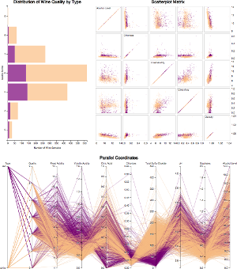 | Wine Quality
by Kailey Hoo |
3 Bar Chart (Horizontal, Stacked), Scatterplot Matrix, Parallel Coordinates | 4 Linked Views, Details-on-Demand (On Hover), Brush (On Drag, Slider), Filter (Checkbox, Dropdown) |
| 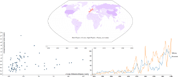 | Economic Crises and Militarized Disputes
by Patrick Howell |
3 Line Chart (Multi-Series), Scatterplot, Choropleth (Animated) | 2 Details-on-Demand (On Hover), Filter (Button, Slider) |
| 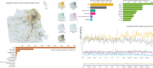 | SFPD Incidents in October 2014
by Michaela Hull |
3 Symbol Map (Small Multiples), Bar Chart (Horizontal), Line Chart (Multi-Series) | 4 Linked Views, Filter (On Click), Details-on-Demand (On Hover), Brush (On Drag) |
| 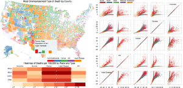 | Community Health Status Indicators
by Scott Kellert |
4 Choropleth, Heatmap, Scatterplot Matrix, Bar Chart (Vertical) | 5 Zoom (On Click), Pan (On Click), Filter (On Hover, On Click), Brush (On Drag), Details-on-Demand (On Hover) |
| 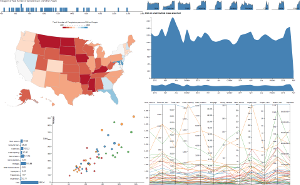 | Consumer Financial Protection Bureau Complaints
by Chandrashekar Konda |
5 Choropleth, Bar Chart (Vertical, Horizontal), Bubble Chart, Area Chart (Small Multiple), Parallel Coordinates | 5 Linked Views, Brush (On Drag), Reorder (On Drag), Filter (On Click, Dropdown), Details-on-Demand (On Hover) |
| 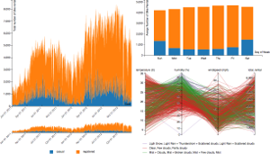 | Capital Bike Sharing Dataset
by Yupeng Kong |
3 Area Chart (Stacked), Bar Chart (Stacked), Parallel Coordinates | 3 Linked Views, Brush (On Drag), Filter (On Drag) |
| 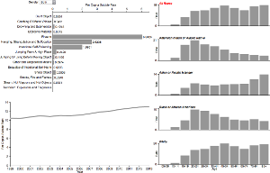 | Suicide Deaths from the CDC
by Brian Kui |
2 Bar Chart (Vertical, Horizontal, Small Multiples), Line Chart | 2 Linked Views, Filter (Dropdown, On Click) |
| 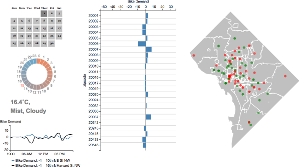 | Capital Bike Sharing Dataset
by Chi Liang Kuo |
3 Calendar Widgets, Line Chart (Multi-Series), Bar Chart (Horizontal), Symbol Map | 2 Filter (On Click, On Hover), Details-on-Demand (On Hover) |
| 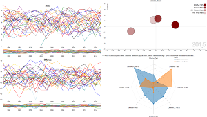 | NBA "Four Factors" Statistics
by Daniel Loman |
3 Bubble Chart (Animated), Line Chart (Multi-Series, Small Multiples), Radar Chart | 3 Filter (Dropdown, Mouse-Over), Brush (On Drag), Details-on-Demand (On Hover) |
| 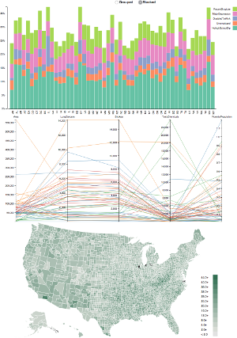 | Community Health Status Indicator Data
by Rashmi Malani |
3 Bar Chart (Vertical, Stacked, Grouped), Parallel Coordinates, Choropleth | 3 Brush (On Drag), Reorder (On Drag), Details-on-Demand (On Hover) |
| 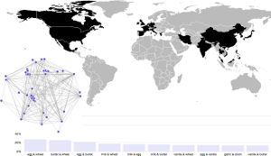 | Decomposing Traditional Country Cuisines
by Layla Martin |
3 Choropleth (Single Color), Bar Chart (Vertical), Force-Directed Network | 3 Linked Views, Filter (On Click), Details-on-Demand (On Hover) |
| 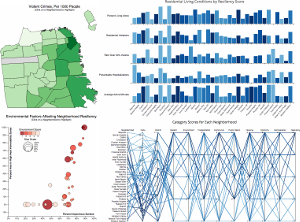 | SF Community Resiliency Indicators
by Monica Meyer |
4 Choropleth, Bubble Chart, Bar Chart (Vertical, Small Multiple), Parallel Coordinates | 4 Linked Views, Details-on-Demand (On Hover), Brush (On Hover, On Drag), Filter (Dropdown) |
| 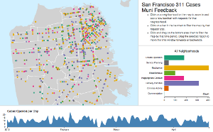 | SF 311 Cases Muni Feedback
by Griffin Okamoto |
3 Symbol Map, Bar Chart (Horizontal), Area Chart | 5 Linked Views, Zoom (On Click), Filter (On Click), Brush (On Drag, On Click), Details-on-Demand (On Hover) |
| 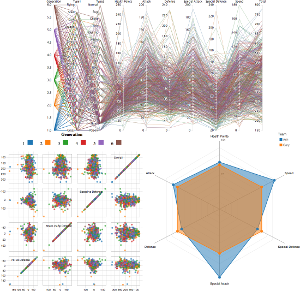 | Pokemon Dataset
by Steven Rea |
3 Parallel Coordinates, Scatterplot Matrix, Radar Chart | 4 Brush (On Drag), Reorder (On Drag), Filter (Dropdown), Details-on-Demand (On Hover) |
| 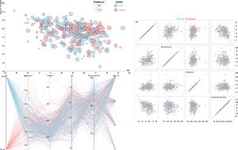 | Heart Disease Prevelance
by David Reilly |
3 Bubble Chart, Scatterplot Matrix, Parallel Coordinates | 4 Details-on-Demand (On Hover), Brush (On Hover, On Drag), Filter (Checkbox), Reorder (On Drag) |
| 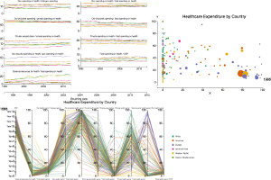 | Worldwide Healthcare Spending
by Matthew Shadish |
3 Line Chart (Multi-Series, Small Multiple), Bubble Chart, Parallel Coordinates | 3 Filter (On Drag, Dropdown), Details-on-Demand (On Hover), Reorder (On Drag) |
| 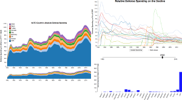 | NATO Spending
by Jason Shu |
3 Area Chart (Stacked), Bar Chart (Vertical), Line Chart (Multi-Series) | 4 Sort (Checkbox), Filter (Slider), Brush (On Drag), Details-on-Demand (On Hover) |
| 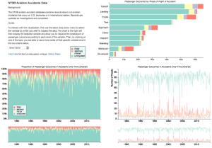 | NTSB Aviation Accidents
by Kenneth Simonds |
3 Area Chart (100% Stacked), Bar Chart (Horizontal, Stacked), Line Chart (Multi-Series) | 2 Linked Views, Brush (On Drag) |
| 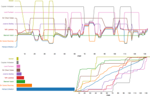 | Character Mentions in the Black Arrow
by Fletcher Stump Smith |
3 Narrative Chart, Bar Chart (Horizontal, Vertical), Line Chart (Multi-Series) | 1 Zoom (Slider) |
| 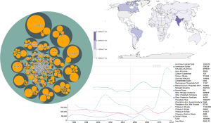 | Fertilizer Imports and Exports
by Sandeep Vanga |
3 Circle Packing, Line Chart (Multi-Series), Choropleth | 3 Zoom (On Click), Filter (Checkbox, Button, Slider), Details-on-Demand (On Hover) |
| 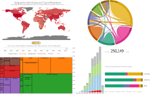 | State Department Cables from Wikileaks
by Cody Wild |
4 Chord Diagram, Bar Chart (Vertical, Horizontal, Stacked, 100% Stacked), Choropleth, Treemap | 2 Brush (On Hover, On Click), Filter (Slider, On Click) |
| 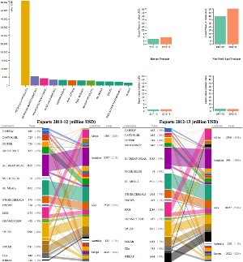 | Commodity Exports by India
by Amit Yadav |
2 Bar Chart (Vertical, Small Multiples), Sankey Diagram (Bipartite) | 3 Sort (Checkbox), Filter (On Hover), Details-on-Demand (On Hover) |
| 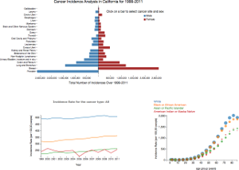 | Cancer Incidence in California
by Selman Yilmaz |
3 Bar Chart (Horizontal, Population Pyramid), Line Chart (Multi-Series), Bubble Chart | 3 Linked Views, Filter (On Click), Details-on-Demand (On Hover) |
| 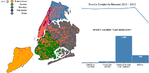 | NYC Food Poisoning
by Weiwei Zhang |
3 Symbol Map, Line Chart, Bar Chart (Vertical) | 3 Linked Views, Filter (Dropdown, On Click), Details-on-Demand (On Hover) |